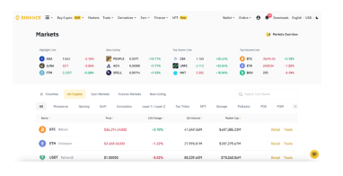
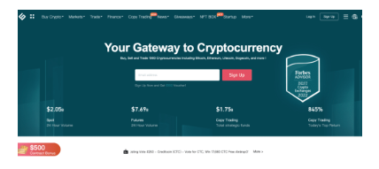
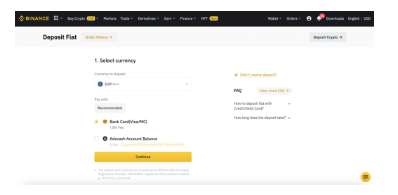
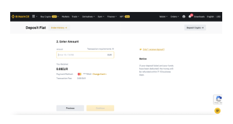
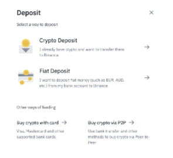
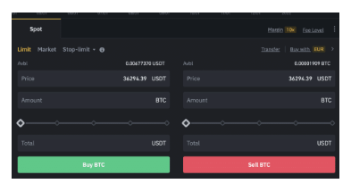

Dash2Trade operates on the Binance Smart Chain and thus – you will need to be in possession of BNB to purchase our token.
If you’re somewhat new to the cryptocurrency investment space and need a little bit of help – this beginner’s guide will explain how to buy BNB in under 10 minutes.
We’ll present you with a few options in terms of suitable exchanges and payment methods – so that all prospective Dash2Trade investors are catered for.
If you’re looking for a quickfire overview of how to buy BNB right now – follow the steps below to complete the process with Binance.
Once you confirm the order, Binance will deduct the funds from your cash balance and subsequently buy BNB on your behalf.
If you need a more detailed walkthrough of how to buy BNB – read on.
It goes without saying that the easiest way to buy BNB is through a cryptocurrency exchange or broker.
But, when you consider that BNB is now a top-5 digital currency in terms of market capitalization – you’ve got hundreds of platforms to choose from.
If you’re yet to decide on where to buy BNB today – below you will find a small selection of platforms that are worth considering.
Binance backs BNB – so it makes sense that you can easily purchase the token via the provider’s exchange platform. As you likely know, Binance is by far the largest cryptocurrency exchange globally – both in terms of volume and registered users.
The process of buying BNB at Binance is simple – but the payment methods and fees offered to you will depend on where you live. For example, those in the US and Europe can easily buy BNB with a debit/credit card. In terms of fees, US clients pay just 0.5%.
Europeans, on the other hand, are charged a higher debit/credit card fee of 1.8%. If, however, you are depositing funds via a bank wire – you might benefit from a fee-free deposit. But, this could delay the deposit process by several days.
The other option you have is to buy BNB with a cryptocurrency like Bitcoin or Ethereum. In doing so, you will only be charged a commission of 0.10%. Irrespective of which payment method you opt for, after completing the purchase you can withdraw the BNB tokens to your wallet.
Another option to consider is Gate.io – which allows you to instantly buy BNB with a Visa or MasterCard. However, like all cryptocurrency exchanges that support fiat currency payments – you will first need to get your Gate.io account verified.
This is typically just a case of entering some personal information and uploading your ID. Gate.io does not directly process debit/credit card payments – as it has instead partnered with a number of third-party providers.
You can, however, as of writing – buy BNB via MoonPay on a fee-free basis. Moonpay not only accepts Visa and MasterCard but several e-wallets too. The minimum amount of BNB you can buy with fiat money at Gate.io is $20.
In this section of our guide, we are going to show you how to buy BNB at Binance – every step of the way.
We have broken down the specific steps depending on your preferred payment method – so that all bases are covered.
Irrespective of your chosen payment method, you will first need to open an account with Binance.
Initially, this will simply require the following information:
If you are looking to deposit funds with fiat money – you will need to provide additional information – which we explain in the next step.
First and foremost – if you are looking to buy BNB and pay for your purchase with cryptocurrency – you can skip the verification process (limits apply).
Otherwise, if you’re looking to fund your Binance account with fiat money – then you will need to go through a KYC process. This will also be the case if you elected to use Gate.io.
So, to get the ball rolling, enter some personal information when prompted – such as your full name,
nationality, home address, and date of birth.Next, you will be asked to upload a copy of your government-issued ID. This can be a passport or driver’s license. In some cases, depending on your location, a state-issued ID card might suffice.
The good thing about the KYC process at Binance is that it is automated. As such, you should find that your Binance account is verified in under two minutes.
Although Binance operates in virtually all countries – the payment methods that you have access to can vary depending on where you reside.
For example, those in the US can fund their account with a debit card, ACH, or bank wire. Europeans can also use a debit card, alongside SEPA.
To see what payment methods are available to you, click on the ‘Buy Crypto’ button. For example, in the image above, EUR has been selected – which gives us the option of using a Visa/MasterCard or SEPA.
Once you have selected your preferred payment method – click on ‘Continue’.
On the next page, you will be asked to enter your payment details. The specific process will, of course, depend on which payment method you opt for.
If, however, you want to buy BNB in exchange for a cryptocurrency that you already own – the payment process is different.
First, you need to hover your mouse over the ‘Wallet’ button – followed by ‘Overview’. Next, click on the ‘Deposit’ button, followed by ‘Crypto Deposit’.
You will then be asked to select the crypto asset that you wish to deposit into Binance – so choose BNB.
Next, copy the unique BNB address that Binance gives you and head over to your private wallet.
Finally, paste the BNB address into your wallet, select the number of tokens that you wish to transfer to Binance, and confirm the transaction.
The amount of time that you will need to wait for Binance to credit your account will vary depending on the respective network.
Typically, Bitcoin is the slowest and will take between 10-20 minutes. Other tokens can appear in your Binance wallet in less than five minutes.
At this stage of our walkthrough, you should now have a Binance account that is funded with either fiat money or cryptocurrency.
Therefore, the final part of the process is to exchange your account balance into BNB. The specific process will depend on whether you are paying for your BNB investment with crypto or fiat money.
If your account is funded in fiat money – here’s what you need to do to buy BNB.
First, hover your mouse over the ‘Buy Crypto’ button and click on ‘Cash Balance’. By default, your local currency should appear in the ‘Spend’ tab.
Next, in the ‘Receive’ tab, by default, this should show Bitcoin. As such, you’ll need to change this to BNB.
You will now need to enter the amount of money that you wish to invest in BNB. In the ‘Spend’ tab, you will see the minimum and maximum requirements. In our example, we are being told that we can exchange between 20 and 10,000 EUR into BNB.
Next, click on the ‘Continue’ button. You will now be shown the current exchange rate between your local currency and BNB – alongside the fees that you will be charged.
If everything looks in order – confirm the purchase. You will now find BNB tokens in your Binance wallet – which are readily available to withdraw.
Using Crypto Balance
If your account is funded in crypto – here’s what you need to do to buy BNB.
First, hover your mouse over the ‘Trade’ button – followed by ‘Classic’. You will now be redirected to the main Binance exchange. On the right-hand side of the screen, you will see a search box.
This is where you can enter the BNB pair that you wish to trade. For example, let’s suppose that you funded your Binance account with Bitcoin. In this instance, you would need to search for BNB/BTC.
Once you find your desired pair, click on it. The final step is to set up an order. Scroll down to the bottom of the page for your respective pair and you will see two order boxes – like in the image below.
First, the order is currently set as a limit. Instead, change it to a market order so that your BNB purchase is executed instantly at the next best available price.
Next, if you are looking to swap your entire crypto balance for the respective coin – move the slider to 100%.
Finally, you need to click on the relevant button to confirm your order. For example, if it’s Bitcoin that you are swapping for BNB – you would click on ‘Sell Bitcoin’.
If you’re using an altcoin – the button that you need to click is ‘Buy BNB’.
After confirming the order, Binance will instantly exchange the two crypto assets and the BNB will appear in your wallet.
This beginners’ guide has explained how to buy BNB – which will subsequently allow you to invest in Dash2Trade tokens.
Once you have purchased BNB at your chosen exchange, you can then withdraw the tokens to your preferred wallet – such as Trust Wallet or MetaMask.
In doing so, you can then exchange your BNB tokens into Dash2Trade via Pancakeswap.